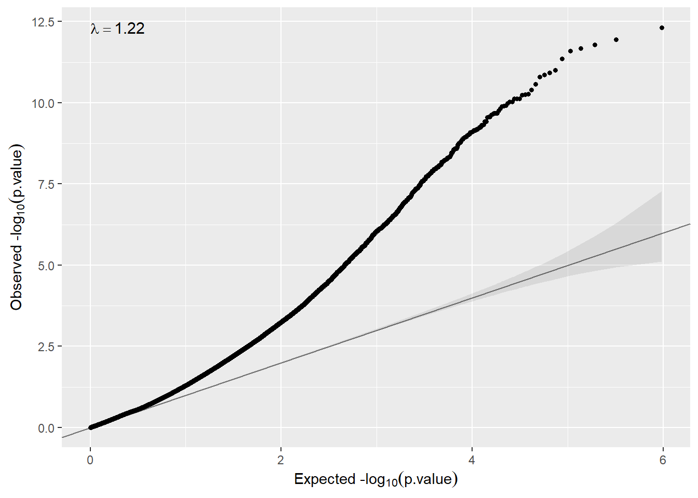

6 Epigenome-wide association analysis (EWAS)
EWAS requires basically the same statistical methods as those used in DGE. It should be notice that the pooled analysis we are going to illustrate here can also be performed with transcriptomic data since each study must have different range values. If so, gene expression harmonization should be performed, for instance, by standardizing the data at each study. For EWAS where methylation is measured using beta values (e.g CpG data are in the range 0-1) this is not a problem. In any case, adopting the meta-analysis approach could be a safe option.
We have downloaded data from GEO corresponding to the accesion number GSE66351 which includes DNA methylation profiling (Illumina 450K array) of 190 individuals. Data corresponds to CpGs beta values measured in the superior temporal gyrus and prefrontal cortex brain regions of patients with Alzheimer’s. Data have been downloaded using GEOquery package that gets GEO data as ExpressionSet objects. Researchers who are not familiar with ExpressionSets can read this Section. Notice that data are encoded as beta-values that ensure data harmonization across studies.
In order to illustrate how to perform data analyses using federated data, we have split the data into two ExpressionSets having 100 and 90 samples as if they were two different studies. Figure ?? shows the two resources defined for both studies (GSE66351_1 and GSE66351_2)
In order to perform omic data analyses, we need first to login and assign resources to DataSHIELD. This can be performed using the as.resource.object() function
builder <- DSI::newDSLoginBuilder()
builder$append(server = "study1", url = "https://opal-demo.obiba.org",
user = "dsuser", password = "P@ssw0rd",
resource = "RSRC.GSE66351_1", profile = "omics")
builder$append(server = "study2", url = "https://opal-demo.obiba.org",
user = "dsuser", password = "P@ssw0rd",
resource = "RSRC.GSE66351_2", profile = "omics")
logindata <- builder$build()
conns <- DSI::datashield.login(logins = logindata, assign = TRUE,
symbol = "res")##
## Logging into the collaborating servers##
## Assigning resource data...# Assign to the original R class (e.g ExpressionSet)
datashield.assign.expr(conns, symbol = "methy",
expr = quote(as.resource.object(res)))Now, we can see that the resources are actually loaded into the R servers as their original class
ds.class("methy")## $study1
## [1] "ExpressionSet"
## attr(,"package")
## [1] "Biobase"
##
## $study2
## [1] "ExpressionSet"
## attr(,"package")
## [1] "Biobase"Then, some Bioconductor-type functions can be use to return non-disclosive information of ExpressionSets from each server to the client, using similar functions as those defined in the dsBaseClient package. For example, feature names can be returned by
fn <- ds.featureNames("methy")
lapply(fn, head)## $study1
## [1] "cg00000029" "cg00000108" "cg00000109" "cg00000165" "cg00000236"
## [6] "cg00000289"
##
## $study2
## [1] "cg00000029" "cg00000108" "cg00000109" "cg00000165" "cg00000236"
## [6] "cg00000289"Experimental phenotypes variables can be obtained by
ds.varLabels("methy")## $study1
## [1] "title" "geo_accession"
## [3] "status" "submission_date"
## [5] "last_update_date" "type"
## [7] "channel_count" "source_name_ch1"
## [9] "organism_ch1" "characteristics_ch1"
## [11] "characteristics_ch1.1" "characteristics_ch1.2"
## [13] "characteristics_ch1.3" "characteristics_ch1.4"
## [15] "characteristics_ch1.5" "characteristics_ch1.6"
## [17] "characteristics_ch1.7" "characteristics_ch1.8"
## [19] "molecule_ch1" "extract_protocol_ch1"
## [21] "label_ch1" "label_protocol_ch1"
## [23] "taxid_ch1" "hyb_protocol"
## [25] "scan_protocol" "description"
## [27] "data_processing" "platform_id"
## [29] "contact_name" "contact_email"
## [31] "contact_phone" "contact_laboratory"
## [33] "contact_institute" "contact_address"
## [35] "contact_city" "contact_zip/postal_code"
## [37] "contact_country" "supplementary_file"
## [39] "supplementary_file.1" "data_row_count"
## [41] "age" "braak_stage"
## [43] "brain_region" "cell type"
## [45] "diagnosis" "donor_id"
## [47] "sentrix_id" "sentrix_position"
## [49] "Sex"
##
## $study2
## [1] "title" "geo_accession"
## [3] "status" "submission_date"
## [5] "last_update_date" "type"
## [7] "channel_count" "source_name_ch1"
## [9] "organism_ch1" "characteristics_ch1"
## [11] "characteristics_ch1.1" "characteristics_ch1.2"
## [13] "characteristics_ch1.3" "characteristics_ch1.4"
## [15] "characteristics_ch1.5" "characteristics_ch1.6"
## [17] "characteristics_ch1.7" "characteristics_ch1.8"
## [19] "molecule_ch1" "extract_protocol_ch1"
## [21] "label_ch1" "label_protocol_ch1"
## [23] "taxid_ch1" "hyb_protocol"
## [25] "scan_protocol" "description"
## [27] "data_processing" "platform_id"
## [29] "contact_name" "contact_email"
## [31] "contact_phone" "contact_laboratory"
## [33] "contact_institute" "contact_address"
## [35] "contact_city" "contact_zip/postal_code"
## [37] "contact_country" "supplementary_file"
## [39] "supplementary_file.1" "data_row_count"
## [41] "age" "braak_stage"
## [43] "brain_region" "cell type"
## [45] "diagnosis" "donor_id"
## [47] "sentrix_id" "sentrix_position"
## [49] "Sex"
##
## attr(,"class")
## [1] "dsvarLabels" "list"6.1 Single CpG analysis
Once the methylation data have been loaded into the opal server, we can perform different type of analyses using functions from the dsOmicsClient package. Let us start by illustrating how to analyze a single CpG from two studies by using an approach that is mathematically equivalent to placing all individual-level.
ans <- ds.lmFeature(feature = "cg07363416",
model = ~ diagnosis + Sex,
Set = "methy",
datasources = conns)## Iteration 1...## CURRENT DEVIANCE: 7.834782376469## Iteration 2...## CURRENT DEVIANCE: 5.21465032637778## Iteration 3...## CURRENT DEVIANCE: 5.21465032637778## SUMMARY OF MODEL STATE after iteration 3## Current deviance 5.21465032637778 on 187 degrees of freedom## Convergence criterion TRUE (0)##
## beta: 0.143108602924252 0.0345988560191347 -0.12176433102489##
## Information matrix overall:## (Intercept) diagnosisCTRL SexM
## (Intercept) 190 84 89
## diagnosisCTRL 84 84 50
## SexM 89 50 89##
## Score vector overall:## [,1]
## (Intercept) 1.187939e-13
## diagnosisCTRL 4.898859e-14
## SexM 4.524159e-14##
## Current deviance: 5.21465032637778ans## Estimate Std. Error p-value
## cg07363416 0.03459886 0.02504291 0.1670998
## attr(,"class")
## [1] "dsLmFeature" "matrix" "array"6.2 Multiple CpG analysis
The same analysis can be performed for all features (e.g. CpGs) just avoiding the feature argument. This process can be parallelized using mclapply function from the multicore package.
ans <- ds.lmFeature(model = ~ diagnosis + Sex,
Set = "methy",
datasources = conns,
mc.cores = 20)This method corresponds to the pooled analysis approach and can be very time consiming since the function repeatedly calls the DataSHIELD function ds.glm(). We can adopt another strategy that is to run a glm of each feature independently at each study using limma package (which is really fast) and then combine the results (i.e. meta-analysis approach).
ans.limma <- ds.limma(model = ~ diagnosis + Sex,
Set = "methy",
datasources = conns)Then, we can visualize the top genes at each study (i.e server) by
lapply(ans.limma, head)## $study1
## # A tibble: 6 x 7
## id n beta SE t P.Value adj.P.Val
## <chr> <int> <dbl> <dbl> <dbl> <dbl> <dbl>
## 1 cg13138089 100 -0.147 0.0122 -6.62 0.00000000190 0.000466
## 2 cg23859635 100 -0.0569 0.00520 -6.58 0.00000000232 0.000466
## 3 cg13772815 100 -0.0820 0.0135 -6.50 0.00000000327 0.000466
## 4 cg12706938 100 -0.0519 0.00872 -6.45 0.00000000425 0.000466
## 5 cg24724506 100 -0.0452 0.00775 -6.39 0.00000000547 0.000466
## 6 cg02812891 100 -0.125 0.0163 -6.33 0.00000000731 0.000466
##
## $study2
## # A tibble: 6 x 7
## id n beta SE t P.Value adj.P.Val
## <chr> <int> <dbl> <dbl> <dbl> <dbl> <dbl>
## 1 cg04046629 90 -0.101 0.0128 -5.91 0.0000000621 0.0172
## 2 cg07664323 90 -0.0431 0.00390 -5.85 0.0000000822 0.0172
## 3 cg27098804 90 -0.0688 0.0147 -5.79 0.000000107 0.0172
## 4 cg08933615 90 -0.0461 0.00791 -5.55 0.000000298 0.0360
## 5 cg18349298 90 -0.0491 0.00848 -5.42 0.000000507 0.0489
## 6 cg02182795 90 -0.0199 0.0155 -5.36 0.000000670 0.0538The annotation can be added by using the argument annotCols. It should be a vector with the columns of the annotation available in the ExpressionSet or RangedSummarizedExperiment that want to be showed. The columns of the annotation can be obtained by
ds.fvarLabels("methy")## $study1
## [1] "ID" "Name"
## [3] "AddressA_ID" "AlleleA_ProbeSeq"
## [5] "AddressB_ID" "AlleleB_ProbeSeq"
## [7] "Infinium_Design_Type" "Next_Base"
## [9] "Color_Channel" "Forward_Sequence"
## [11] "Genome_Build" "CHR"
## [13] "MAPINFO" "SourceSeq"
## [15] "Chromosome_36" "Coordinate_36"
## [17] "Strand" "Probe_SNPs"
## [19] "Probe_SNPs_10" "Random_Loci"
## [21] "Methyl27_Loci" "UCSC_RefGene_Name"
## [23] "UCSC_RefGene_Accession" "UCSC_RefGene_Group"
## [25] "UCSC_CpG_Islands_Name" "Relation_to_UCSC_CpG_Island"
## [27] "Phantom" "DMR"
## [29] "Enhancer" "HMM_Island"
## [31] "Regulatory_Feature_Name" "Regulatory_Feature_Group"
## [33] "DHS" "RANGE_START"
## [35] "RANGE_END" "RANGE_GB"
## [37] "SPOT_ID"
##
## $study2
## [1] "ID" "Name"
## [3] "AddressA_ID" "AlleleA_ProbeSeq"
## [5] "AddressB_ID" "AlleleB_ProbeSeq"
## [7] "Infinium_Design_Type" "Next_Base"
## [9] "Color_Channel" "Forward_Sequence"
## [11] "Genome_Build" "CHR"
## [13] "MAPINFO" "SourceSeq"
## [15] "Chromosome_36" "Coordinate_36"
## [17] "Strand" "Probe_SNPs"
## [19] "Probe_SNPs_10" "Random_Loci"
## [21] "Methyl27_Loci" "UCSC_RefGene_Name"
## [23] "UCSC_RefGene_Accession" "UCSC_RefGene_Group"
## [25] "UCSC_CpG_Islands_Name" "Relation_to_UCSC_CpG_Island"
## [27] "Phantom" "DMR"
## [29] "Enhancer" "HMM_Island"
## [31] "Regulatory_Feature_Name" "Regulatory_Feature_Group"
## [33] "DHS" "RANGE_START"
## [35] "RANGE_END" "RANGE_GB"
## [37] "SPOT_ID"
##
## attr(,"class")
## [1] "dsfvarLabels" "list"Then we can run the analysis and obtain the output with the chromosome and gene symbol by:
ans.limma.annot <- ds.limma(model = ~ diagnosis + Sex,
Set = "methy",
annotCols = c("CHR", "UCSC_RefGene_Name"),
datasources = conns)lapply(ans.limma.annot, head)## $study1
## # A tibble: 6 x 9
## id n beta SE t P.Value adj.P.Val CHR UCSC_RefGene_Na~
## <chr> <int> <dbl> <dbl> <dbl> <dbl> <dbl> <chr> <chr>
## 1 cg1313~ 100 -0.147 0.0122 -6.62 1.90e-9 0.000466 2 "ECEL1P2"
## 2 cg2385~ 100 -0.0569 0.00520 -6.58 2.32e-9 0.000466 2 "MTA3"
## 3 cg1377~ 100 -0.0820 0.0135 -6.50 3.27e-9 0.000466 17 ""
## 4 cg1270~ 100 -0.0519 0.00872 -6.45 4.25e-9 0.000466 19 "MEX3D"
## 5 cg2472~ 100 -0.0452 0.00775 -6.39 5.47e-9 0.000466 19 "ISOC2;ISOC2;IS~
## 6 cg0281~ 100 -0.125 0.0163 -6.33 7.31e-9 0.000466 2 "ECEL1P2"
##
## $study2
## # A tibble: 6 x 9
## id n beta SE t P.Value adj.P.Val CHR UCSC_RefGene_Na~
## <chr> <int> <dbl> <dbl> <dbl> <dbl> <dbl> <chr> <chr>
## 1 cg0404~ 90 -0.101 0.0128 -5.91 6.21e-8 0.0172 11 "CD6"
## 2 cg0766~ 90 -0.0431 0.00390 -5.85 8.22e-8 0.0172 6 "MUC21"
## 3 cg2709~ 90 -0.0688 0.0147 -5.79 1.07e-7 0.0172 11 "CD6"
## 4 cg0893~ 90 -0.0461 0.00791 -5.55 2.98e-7 0.0360 1 ""
## 5 cg1834~ 90 -0.0491 0.00848 -5.42 5.07e-7 0.0489 3 "RARRES1;RARRES~
## 6 cg0218~ 90 -0.0199 0.0155 -5.36 6.70e-7 0.0538 8 ""Then, the last step is to meta-analyze the results. Different methods can be used to this end. We have implemented a method that meta-analyze the p-pvalues of each study as follows:
ans.meta <- metaPvalues(ans.limma)
ans.meta## # A tibble: 481,868 x 4
## id study1 study2 p.meta
## <chr> <dbl> <dbl> <dbl>
## 1 cg13138089 0.00000000190 0.00000763 4.78e-13
## 2 cg25317941 0.0000000179 0.00000196 1.12e-12
## 3 cg02812891 0.00000000731 0.00000707 1.63e-12
## 4 cg12706938 0.00000000425 0.0000161 2.14e-12
## 5 cg16026647 0.000000101 0.000000797 2.51e-12
## 6 cg12695465 0.00000000985 0.0000144 4.33e-12
## 7 cg21171625 0.000000146 0.00000225 9.78e-12
## 8 cg13772815 0.00000000327 0.000122 1.18e-11
## 9 cg00228891 0.000000166 0.00000283 1.38e-11
## 10 cg21488617 0.0000000186 0.0000299 1.62e-11
## # ... with 481,858 more rowsWe can verify that the results are pretty similar to those obtained using pooled analyses. Here we compute the association for two of the top-CpGs:
res1 <- ds.lmFeature(feature = "cg13138089",
model = ~ diagnosis + Sex,
Set = "methy",
datasources = conns)## Iteration 1...## CURRENT DEVIANCE: 29.765420228408## Iteration 2...## CURRENT DEVIANCE: 2.43819505985575## Iteration 3...## CURRENT DEVIANCE: 2.43819505985575## SUMMARY OF MODEL STATE after iteration 3## Current deviance 2.43819505985575 on 187 degrees of freedom## Convergence criterion TRUE (0)##
## beta: 0.443404581787976 -0.137334787076049 -0.0218537351160394##
## Information matrix overall:## (Intercept) diagnosisCTRL SexM
## (Intercept) 190 84 89
## diagnosisCTRL 84 84 50
## SexM 89 50 89##
## Score vector overall:## [,1]
## (Intercept) -9.681145e-14
## diagnosisCTRL -6.980527e-14
## SexM -5.542788e-14##
## Current deviance: 2.43819505985575res1## Estimate Std. Error p-value
## cg13138089 -0.1373348 0.01712405 1.057482e-15
## attr(,"class")
## [1] "dsLmFeature" "matrix" "array"res2 <- ds.lmFeature(feature = "cg13772815",
model = ~ diagnosis + Sex,
Set = "methy",
datasources = conns)## Iteration 1...## CURRENT DEVIANCE: 37.4410001835## Iteration 2...## CURRENT DEVIANCE: 0.692937396766391## Iteration 3...## CURRENT DEVIANCE: 0.692937396766391## SUMMARY OF MODEL STATE after iteration 3## Current deviance 0.692937396766391 on 187 degrees of freedom## Convergence criterion TRUE (0)##
## beta: 0.471427788697297 -0.0678613723066762 -0.00640757953624292##
## Information matrix overall:## (Intercept) diagnosisCTRL SexM
## (Intercept) 190 84 89
## diagnosisCTRL 84 84 50
## SexM 89 50 89##
## Score vector overall:## [,1]
## (Intercept) -2.370326e-14
## diagnosisCTRL -1.237899e-14
## SexM -1.260103e-14##
## Current deviance: 0.692937396766391res2## Estimate Std. Error p-value
## cg13772815 -0.06786137 0.009128915 1.056225e-13
## attr(,"class")
## [1] "dsLmFeature" "matrix" "array"We can create a QQ-plot by using the function qqplot available in our package.
qqplot(ans.meta$p.meta)
Here In some cases inflation can be observed, so that, correction for cell-type or surrogate variables must be performed. We describe how we can do that in the next two sections.
6.3 Adjusting for Surrogate Variables
The vast majority of omic studies require to control for unwanted variability. The surrogate variable analysis (SVA) can address this issue by estimating some hidden covariates that capture differences across individuals due to some artifacts such as batch effects or sample quality sam among others. The method is implemented in SVA package.
Performing this type of analysis using the ds.lmFeature function is not allowed since estimating SVA would require to implement a non-disclosive method that computes SVA from the different servers. This will be a future topic of the dsOmicsClient. NOTE that, estimating SVA separately at each server would not be a good idea since the aim of SVA is to capture differences mainly due to experimental issues among ALL individuals. What we can do instead is to use the ds.limma function to perform the analyses adjusted for SVA at each study.
##
## Logging into the collaborating servers##
## Assigning resource data...ans.sva <- ds.limma(model = ~ diagnosis + Sex,
Set = "methy",
sva = TRUE, annotCols = c("CHR", "UCSC_RefGene_Name"))
ans.sva## $study1
## # A tibble: 481,868 x 9
## id n beta SE t P.Value adj.P.Val CHR UCSC_RefGene_Na~
## <chr> <int> <dbl> <dbl> <dbl> <dbl> <dbl> <chr> <chr>
## 1 cg1313~ 100 -0.147 0.0122 -6.62 1.90e-9 0.000466 2 "ECEL1P2"
## 2 cg2385~ 100 -0.0569 0.00520 -6.58 2.32e-9 0.000466 2 "MTA3"
## 3 cg1377~ 100 -0.0820 0.0135 -6.50 3.27e-9 0.000466 17 ""
## 4 cg1270~ 100 -0.0519 0.00872 -6.45 4.25e-9 0.000466 19 "MEX3D"
## 5 cg2472~ 100 -0.0452 0.00775 -6.39 5.47e-9 0.000466 19 "ISOC2;ISOC2;IS~
## 6 cg0281~ 100 -0.125 0.0163 -6.33 7.31e-9 0.000466 2 "ECEL1P2"
## 7 cg2766~ 100 -0.0588 0.0198 -6.33 7.48e-9 0.000466 16 "ANKRD11"
## 8 cg1537~ 100 -0.0709 0.0115 -6.32 7.83e-9 0.000466 2 "LPIN1"
## 9 cg1552~ 100 -0.0446 0.00750 -6.29 8.69e-9 0.000466 10 ""
## 10 cg1269~ 100 -0.0497 0.00155 -6.27 9.85e-9 0.000475 6 "GCNT2;GCNT2;GC~
## # ... with 481,858 more rows
##
## $study2
## # A tibble: 481,868 x 9
## id n beta SE t P.Value adj.P.Val CHR UCSC_RefGene_Name
## <chr> <int> <dbl> <dbl> <dbl> <dbl> <dbl> <chr> <chr>
## 1 cg040~ 90 -0.101 0.0128 -5.91 6.21e-8 0.0172 11 "CD6"
## 2 cg076~ 90 -0.0431 0.00390 -5.85 8.22e-8 0.0172 6 "MUC21"
## 3 cg270~ 90 -0.0688 0.0147 -5.79 1.07e-7 0.0172 11 "CD6"
## 4 cg089~ 90 -0.0461 0.00791 -5.55 2.98e-7 0.0360 1 ""
## 5 cg183~ 90 -0.0491 0.00848 -5.42 5.07e-7 0.0489 3 "RARRES1;RARRES1"
## 6 cg021~ 90 -0.0199 0.0155 -5.36 6.70e-7 0.0538 8 ""
## 7 cg160~ 90 -0.0531 0.0196 -5.31 7.97e-7 0.0548 17 "MEIS3P1"
## 8 cg012~ 90 -0.0537 0.00971 -5.18 1.39e-6 0.0582 7 "HOXA2"
## 9 cg251~ 90 -0.0224 0.00736 -5.15 1.57e-6 0.0582 3 "ZBTB20;ZBTB20;ZB~
## 10 cg074~ 90 -0.0475 0.00166 -5.13 1.67e-6 0.0582 22 "C22orf27"
## # ... with 481,858 more rows
##
## attr(,"class")
## [1] "dsLimma" "list"Then, data can be combined meta-anlyzed as follows:
ans.meta.sv <- metaPvalues(ans.sva)
ans.meta.sv## # A tibble: 481,868 x 4
## id study1 study2 p.meta
## <chr> <dbl> <dbl> <dbl>
## 1 cg13138089 0.00000000190 0.00000763 4.78e-13
## 2 cg25317941 0.0000000179 0.00000196 1.12e-12
## 3 cg02812891 0.00000000731 0.00000707 1.63e-12
## 4 cg12706938 0.00000000425 0.0000161 2.14e-12
## 5 cg16026647 0.000000101 0.000000797 2.51e-12
## 6 cg12695465 0.00000000985 0.0000144 4.33e-12
## 7 cg21171625 0.000000146 0.00000225 9.78e-12
## 8 cg13772815 0.00000000327 0.000122 1.18e-11
## 9 cg00228891 0.000000166 0.00000283 1.38e-11
## 10 cg21488617 0.0000000186 0.0000299 1.62e-11
## # ... with 481,858 more rowsThe DataSHIELD session must by closed by:
datashield.logout(conns)